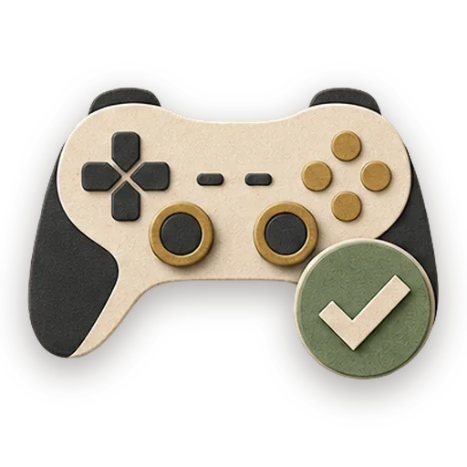

Playtest Report

Run this in GezelNothing opened? Opening from this site needs the latest Gezel. Get Gezel
Playtest like it matters: a structured pass over the mechanics, the edge inputs, and the score loop, every finding written with its repro steps — a ranked fix list, not vibes. Locks the test plan FIRST — what to try and what correct looks like — then plays through it taking notes, then writes the findings with a ranked issue table. Use for playtesting a game before sharing it, 'is the game actually solid', bug hunts on an arcade page, pre-release game QA, and turning playtest feelings into a fix list.
How it runs
| # | Step | Who runs it | What happens |
|---|---|---|---|
| 1 | Write the test plan | Reviewer | mechanics list, edge inputs, what the score loop should do |
| 2 | Play through the plan | Reviewer | structured playthrough notes, observed versus expected, with repros |
| 3 | Write the findings | Copywriter | ranked issue table, repros attached, honest verdict |
| 4 | Evaluate | Reviewer | Grade the deliverable against every acceptance criterion. All pass → finish; any fail → loop back and fix the gap. |
| 5 | Finish | Developer | All acceptance criteria met. Stamp a short summary and report DONE. |
Say something like "playtest the game" or "is the game solid" or "test the arcade game before i share it" or "find the bugs in the game" or "playtest report" in chat to start it.